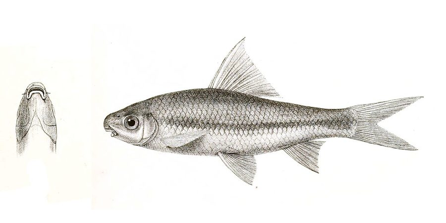

आंग्रा कार्प मछलीAngra Carp
Labeo angra · Cyprinidae · FSH-0068

- Scientific name वैज्ञानिक नाम
- Labeo angra (Hamilton, 1822)
- Family कुल
- Cyprinidae
- Hindi हिंदी
- आंग्रा कार्प मछली
- Local names स्थानीय नाम
- angra carp, angra machhli, angra, khursa, thed
- Status here यहाँ की स्थिति
- native
- Movement आवागमन
- Resident, here all year
- Known from कहाँ दर्ज
- Others have published records from the wider Awadh–Purvanchal plain, none yet from Basti–Ayodhya अवध–पूर्वांचल से दूसरों के प्रकाशित अभिलेख, बस्ती–अयोध्या से अभी नहीं
- IUCN IUCN
- not evaluated
- Review समीक्षा
- not yet reviewed
When to look कब देखें
Present all year. साल भर मौजूद।
Uses and possibilities उपयोग और संभावनाएँ
Drawn from the documented uses in the profile below, where each is labelled traditional, current or a research lead. All uses →
Tell it apart from इनसे अलग पहचानें
आंग्रा कार्प मछली / Angra Carp
Labeo angra (Hamilton, 1822) — Cyprinidae
आंग्रा कार्प मछली — मैदानी नदियों, स्वच्छ धाराओं और रेतीले नालों में पाई जाने वाली एक छोटी, मजबूत और फुर्तीली देसी कार्प (माइनर कार्प) है। इसका शरीर लंबा, गोल-सुडौल और भूरा-चांदी जैसा होता है, जिस पर आँख से लेकर पूँछ तक एक गहरी काली-भूरी धारी होती है। इसकी थूथन आगे की ओर निकली होती है जिसके किनारों पर मांसल उभार होते हैं। यह नदी के पत्थरों और रेत पर जमी काई को खुरचकर खाती है। ग्रामीण क्षेत्रों में इसे बड़े चाव से खाया जाता है।
Quick Identification त्वरित पहचान
| Feature | Description |
|---|---|
| Size | Small freshwater cyprinid; reaches about 22 cm TL (Froese & Pauly 2025) |
| Body Shape | Elongate, subcylindrical anteriorly, compressed posteriorly (Hamilton 1822) |
| Mouth & Snout | Snout prominent, overhanging, with distinct lateral lobes studded with pores (Talwar & Jhingran 1991) |
| Barbels | A single pair of short maxillary barbels concealed in the labial groove (Talwar & Jhingran 1991) |
| Colour Pattern | Steel-grey or brownish dorsally with a distinct dark longitudinal stripe along the flank (Talwar & Jhingran 1991) |
| Dorsal Fin | Short-based, carrying 2–3 unbranched and 10 branched rays, lacking a spine (Hamilton 1822) |
| Scales | Small cycloid scales; 42 to 45 scales in complete lateral line (Talwar & Jhingran 1991) |
Field tip: Look along flowing sandy-gravel shallows of perennial rivers. An elongate, brownish-silvery minor carp with an overhanging snout bearing lateral lobes, a distinct dark horizontal stripe along the flank, and 42–45 lateral line scales, is Labeo angra.
हिंदी: यह पतली और गोल-लंबी मछली है जिसकी थूथन आगे निकली होती है। इसके शरीर के बीच में आँख से पूँछ तक एक गहरी काली-भूरी धारी होती है और तराशे बारीक होते हैं।
Morphology आकारिकी
Size as given by FishBase (Froese & Pauly 2025):
| Measurement | Range | Source |
|---|---|---|
| Maximum length | 22 cm TL | Froese & Pauly (2025), FishBase |
Adult description:
Labeo angra has an elongate, streamlined body that is subcylindrical in the anterior half and compressed towards the caudal peduncle (Hamilton 1822). The dorsal profile is moderately arched, while the ventral contour is nearly straight (Talwar & Jhingran 1991). The head is moderate, conical, and slightly compressed, comprising about one-fifth of the standard length (Talwar & Jhingran 1991). The snout is prominent, fleshy, and overhangs the mouth, with a distinct lateral lobe on each side studded with minute sensory pores (Hamilton 1822). The mouth is small, inferior, and transverse; the lips are thick and fringed, with the lower lip reflected and continuous with a deep labial groove (Talwar & Jhingran 1991). A single pair of short maxillary barbels is present, concealed within the labial groove; rostral barbels are completely lacking (Talwar & Jhingran 1991).
The dorsal fin originates in advance of the pelvic fins, bearing 2–3 unbranched and 10 branched rays, without a stiffened spine (Talwar & Jhingran 1991). The anal fin is short, containing 2 unbranched and 5 branched rays. The pectoral fins are pointed, and the caudal fin is deeply forked with equal pointed lobes (Hamilton 1822). The lateral line is complete and nearly straight, containing 42 to 45 small cycloid scales (Talwar & Jhingran 1991).
Coloration is steel-grey or brownish-olive on the back, fading to shining silver and white on the belly (Talwar & Jhingran 1991). A distinct, dark brown or blackish longitudinal stripe extends from behind the eye along the middle of the flank, terminating in a small dark blotch on the caudal peduncle (Hamilton 1822). The dorsal and caudal fins are dusky grey; the lower paired fins are pale yellowish-white.
हिंदी: इसका शरीर लगभग 22 सेमी तक लंबा, गोल-लंबा और मजबूत होता है। थूथन पर छोटे-छोटे उभार होते हैं। पीठ का रंग स्लेटी-भूरा और पेट सफेद होता है। शरीर के किनारे एक काली धारी स्पष्ट दिखती है।
Behaviour & Ecology व्यवहार और पारिस्थितिकी
The Angra Carp is a rheophilic benthic fish adapted to flowing alluvial waterways (Talwar & Jhingran 1991). It prefers river channels, sandy-gravel shallows, oxbow lakes, and flowing canals with continuous water movement and clean substrates.
Adults form small schools that swim actively along the riverbed. Using their inferior mouths, fringed lips, and fleshy snout lobes, they graze on submerged rocks, gravel, and hard sand surfaces, scraping off epilithic biofilms, diatoms, and microscopic filamentous algae (Talwar & Jhingran 1991). During the high-water monsoon season, they venture into inundated floodplain canals and oxbow connections, returning to main river channels as waters recede in late autumn. They avoid stagnant, heavily hypoxic pools and require reasonable dissolved oxygen levels (Talwar & Jhingran 1991).
हिंदी: यह मछली बहते हुए पानी और रेतीली-पत्थरीली तलहटी में रहना पसंद करती है। यह पत्थरों पर जमी काई और शैवाल को खुरचकर खाती है और झुंड बनाकर नदी की तलहटी पर घूमती है।
Life Cycle / Phenology जीवन चक्र
Seasonal phenology in northern Indian alluvial waters across the agricultural year (Talwar & Jhingran 1991):
| Season / Month | Stage | Field Observation |
|---|---|---|
| June–July (Monsoon onset) | Upstream spawning run | Adults migrate to flowing sandy shallows and tributary streams (Talwar & Jhingran 1991) |
| July–August (Kharif peak) | Spawning & breeding | Spawning occurs in shallow flowing water over clean substrate |
| September–November (Post-monsoon) | Juvenile recruitment | Fingerlings feed actively on benthic diatoms in shallow river glides (Talwar & Jhingran 1991) |
| December–February (Rabi winter) | Deep pool retreat | Sub-adults and adults shelter in deep river scours and perennial pools |
| March–May (Summer / Zaid) | Active benthic feeding | Heavy grazing on algal blooms as water warms |
Spawning takes place during the southwest monsoon from June to August (Talwar & Jhingran 1991). Strong river discharge and high dissolved oxygen levels trigger spawning runs into flowing side channels and gravel shoals. Females release hundreds of demersal, non-adhesive eggs that settle among sand and gravel crevices. The eggs hatch after a few days, and tiny larvae shelter in quiet marginal eddies before joining feeding schools on sandbars as waters recede.
हिंदी: मानसून में जब नदियों में नया पानी आता है, यह उथले किनारों पर जाकर अंडे देती है। कुछ दिनों में अंडों से बच्चे निकल आते हैं और वे तेजी से काई खाकर बड़े होते हैं।
Diet and Feeding Behaviour आहार
Labeo angra is primarily a benthic herbivore and periphyton grazer (Talwar & Jhingran 1991):
Natural diet components:
- Filamentous green algae, blue-green algae, and unicellular diatoms scraped from rocks and sand.
- Decaying aquatic plant fragments and soft organic detritus ingested from bottom silt (Talwar & Jhingran 1991).
- Benthic micro-invertebrates, including chironomid midge larvae and tiny worms associated with periphyton mats.
- Microscopic protozoans and rotifers filtered during juvenile life stages.
हिंदी: यह मुख्य रूप से शाकाहारी मछली है। यह पानी की तली में जमी काई, शैवाल, सड़े हुए पौधों के अंश और कीचड़ के सूक्ष्म कीड़े खाती है।
Predators / Natural Enemies शत्रु
Documented natural predators in northern Indian alluvial freshwater systems:
- Riverine predatory fishes: Large predators like Wallago attu (Striped Catfish), Bagarius bagarius (Goonch), and Chitala chitala (Clown Knifefish) prey on angra schools.
- Piscivorous birds: Herons, cormorants, and storks capture adults in shallow river glides.
- River otters and softshell turtles: Hunt schooling carps in perennial river pools.
- Water snakes: Prey on juveniles in weed-rich nursery shallows.
हिंदी: बोआल, गूंज, चितल, बगुले और उदबिलाव इस मछली का शिकार करते हैं।
Agricultural / Human Relevance कृषि प्रासंगिकता
Nutritional and commercial food value: The Angra Carp is an important small-to-medium food fish across northern and eastern India. It is captured in substantial quantities by commercial and artisanal fishers using cast nets, shore seines, and gill nets in the Ghaghara, Kuwano, and Rapti river basins. Its flesh is white, tender, and tasty, supplying vital animal protein, calcium, and essential fatty acids to rural families at an accessible market price.
Sandbed ecosystem function: By actively scraping and ingesting periphyton and organic silt from river substrates, Labeo angra helps maintain clean, well-oxygenated gravel beds in flowing river systems (Talwar & Jhingran 1991).
Traditional: A traditional staple food fish widely eaten across Awadh and eastern Uttar Pradesh.
Today: Sold fresh in village markets (haats) and urban fish bazaars as an affordable minor carp.
Research direction (a lead, not a result): Assessing induced breeding protocols for Labeo angra in rural hatcheries to enhance indigenous pond polyculture.
हिंदी: यह एक स्वादिष्ट और पौष्टिक देसी मछली है जिसे ग्रामीण बाजारों में खूब पसंद किया जाता है। यह नदियों की तलहटी को साफ रखती है और ग्रामीणों को उत्तम पोषण देती है।
Expected Locally स्थानीय रूप से अपेक्षित
Not a field record. Written from published accounts for eastern Uttar Pradesh. No confirmed local sighting yet — if you have seen it, that is what the atlas needs.
अभी तक स्थानीय पुष्टि नहीं। यह विवरण प्रकाशित स्रोतों से है, किसी अवलोकन से नहीं।
The Angra Carp is expected across eastern Uttar Pradesh in perennial rivers, large flowing streams, oxbow lakes (tals), and major canal systems. Look in river pools and flowing glides from August through January. GBIF holds published records from the wider Awadh–Purvanchal plain, none yet from Basti–Ayodhya. A voucher photograph showing the elongate body, overhanging snout with lateral lobes, single pair of maxillary barbels, and dark lateral stripe, submitted via the About page, would confirm the first local documentation for the project area.
Distribution वितरण
Global range: Widespread across South Asia, natively occurring in India, Pakistan, Nepal, and Bangladesh (Talwar & Jhingran 1991).
In India: Distributed throughout the Indus, Ganges, Brahmaputra, and Mahanadi river drainages (Menon 1999).
In Uttar Pradesh: Recorded throughout the Ganges, Ghaghara, Rapti, and Gomti river networks and major canal systems.
In Basti district / eastern UP: Expected as a resident native species in the Ghaghara and Kuwano river basins and associated floodplain waters.
हिंदी: यह भारत, पाकिस्तान, नेपाल और बांग्लादेश की प्रमुख नदियों में पाई जाती है। उत्तर प्रदेश में घाघरा और कुआनो नदी प्रणालियों में यह सामान्य रूप से उपस्थित है।
Research Questions शोध प्रश्न
- How do seasonal flow modifications downstream of irrigation barrages affect the spawning migration of Labeo angra in the Kuwano basin? / बैराज से पानी कम होने पर इस मछली के अंडे देने पर क्या असर पड़ता है?
- What are the specific dietary preferences of Labeo angra across pre-monsoon and post-monsoon months?
- What is the impact of riverbed sand and gravel extraction on the benthic periphyton grazed by Labeo angra? / नदी से रेत निकालने से इस मछली के भोजन पर क्या प्रभाव पड़ता है?
- Can community-managed seasonal closures protect breeding brooders from dry-season overfishing in river pools?
- What are the specific thermal limits of Labeo angra in drying river pools during summer heatwaves?
Similar Species मिलती-जुलती प्रजातियाँ
| Species | How to tell apart | हिंदी | |
|---|---|---|---|
| Labeo boga ([[boga_labeo\ | Boga Labeo]]) | Lateral line scales 37–39; body orange-tinted silver, lacking distinct dark longitudinal stripe | बोगा लाबियो — तराशे बड़े (37–39) होते हैं और शरीर पर काली धारी नहीं होती |
| Labeo bata ([[bata\ | Bata]]) | Possesses 2–4 barbels; lower lip separated from isthmus by a deep groove; scales 37–40 | बाटा — दो से चार मूंछें होती हैं और निचले होंठ की बनावट अलग होती है |
| Labeo rohita ([[rohu\ | Rohu]]) | Major carp growing much larger in size; body deeper with arched back; lips thick and fringed | रोहू — बहुत बड़ी होती है, पीठ अधिक उठी हुई और होंठ बहुत मोटे व झालरदार होते हैं |
Field rule: An elongate, streamlined brownish-silvery minor carp with an overhanging snout bearing lateral lobes, a single pair of minute maxillary barbels, a dark longitudinal stripe along the flank, and 42–45 lateral line scales, is Labeo angra.
हिंदी: बोगा लाबियो के शरीर पर काली धारी नहीं होती और रोहू बहुत बड़ी होती है, जबकि आंग्रा कार्प पतली होती है, इसके शरीर पर एक काली-भूरी धारी होती है और तराशे बारीक (42–45) होते हैं।
Taxonomy & Classification वर्गीकरण
Original description. Described by Francis Hamilton in 1822 as Cyprinus angra in An Account of the Fishes Found in the River Ganges and Its Branches, page 276. Type locality: River Brahmaputra.
Subspecies. Monotypic — no subspecies are recognized across its continental range.
Family and order placement. Order Cypriniformes, family Cyprinidae, subfamily Labeoninae. The genus Labeo Cuvier, 1816, comprises herbivorous Asian and African carps.
Phylogenetic notes. Labeo angra belongs to the minor carp group of Labeo, characterized by its slender body, high lateral line scale count, and single pair of minute maxillary barbels (Talwar & Jhingran 1991).
IUCN status rationale. Not evaluated (NE) on the global IUCN Red List of Threatened Species. It maintains widespread, abundant wild populations across South Asian river systems.
हिंदी: इसका वैज्ञानिक नाम Labeo angra है और यह Cyprinidae परिवार की Labeoninae उपपरिवार की सदस्य है। प्रकृति में इसका वास सुरक्षित है।
Photo Gallery फोटो गैलरी
No photos yet — add field photos to media/species/angra_carp/ and run node scripts/sync_photos.js.
Photos needed आवश्यक फोटो
- [ ] Lateral view of adult specimen showing brownish-silvery body and dark flank stripe (शरीर और काली धारी की पूरी तस्वीर)
- [ ] Close-up of head showing overhanging snout with lateral lobes (थूथन और किनारे के उभारों का स्पष्ट दृश्य)
- [ ] Freshly collected specimen from a river landing site (नदी से ताजा पकड़ी गई मछली)
- [ ] School of live fish feeding over river gravel in clear water (पानी में तैरता और चरता झुंड)
References संदर्भ
- Hamilton, F. (1822). An Account of the Fishes Found in the River Ganges and Its Branches. Archibald Constable and Company, Edinburgh, p. 276.
- Talwar, P. K. & Jhingran, A. G. (1991). Inland Fishes of India and Adjacent Territories, Vol. 1. Oxford & IBH Publishing Co., New Delhi, p. 199.
- Menon, A. G. K. (1999). Check list - fresh water fishes of India. Records of the Zoological Survey of India, Occasional Paper No. 175, p. 108.
- Jayaram, K. C. (2010). The Freshwater Fishes of the Indian Region, 2nd edition. Narendra Publishing House, Delhi.
- Froese, R. & Pauly, D. (Eds.) (2025). FishBase. World Wide Web electronic publication.
- GBIF Occurrence Data — Labeo angra, India (2025).
Source file: species/fauna/fish/angra_carp.md